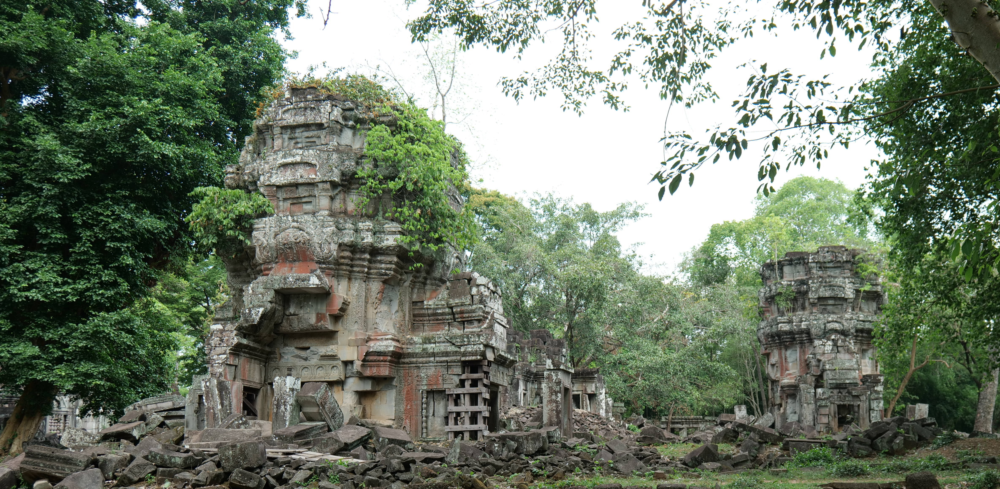
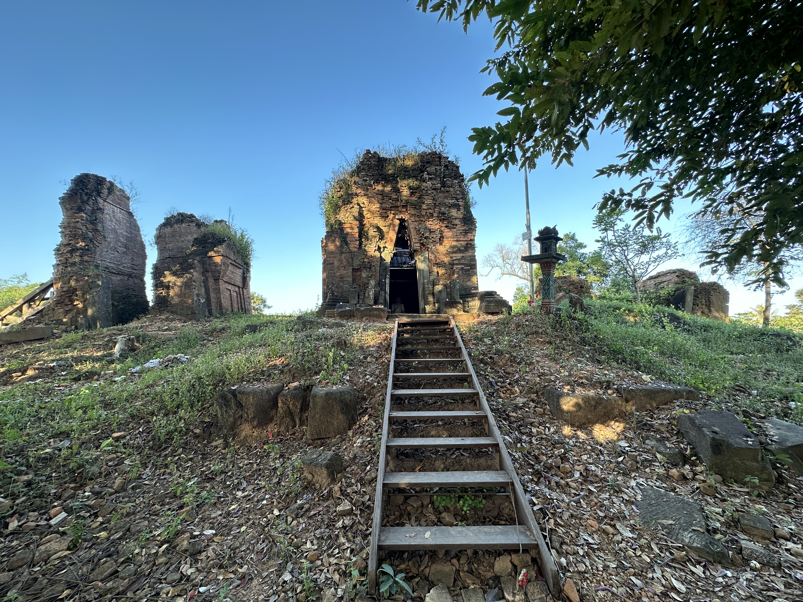

28 Essential Ancient Cambodian Temples Beyond Angkor Wat
Angkor Wat shines globally, but exploring beyond reveals stunning ancient Khmer architecture, hidden ruins, and centuries of rich history.

1. Prasat Pram (Border Siem Reap-Preah Vihear)
ប្រាសាទប្រាំ (ព្រំប្រទល់ខេត្តសៀមរាប-ព្រះវិហារ) [សតវត្សទី១០]
Located on the remote border region between Siem Reap and Preah Vihear, featuring classic architectural elements of the period.
2. Prasat Pram (Koh Ker)
ប្រាសាទប្រាំ (តំបន់កោះកេរ) [សតវត្សទី១០]

A remarkable brick temple ruin located within the majestic archaeological complex of Koh Ker.
3. Preah Khan of Kampong Svay
ប្រាសាទព្រះខ័នកំពង់ស្វាយ [សតវត្សទី១២]

One of the largest provincial temple complexes of the Khmer Empire, hidden deep within forested lands.
4. Pong Toek Temple
ប្រាសាទពុងទឹក (បុងទឹក) [សតវត្សទី១០-១១]

An ancient sanctuary site reflecting early architectural traditions.